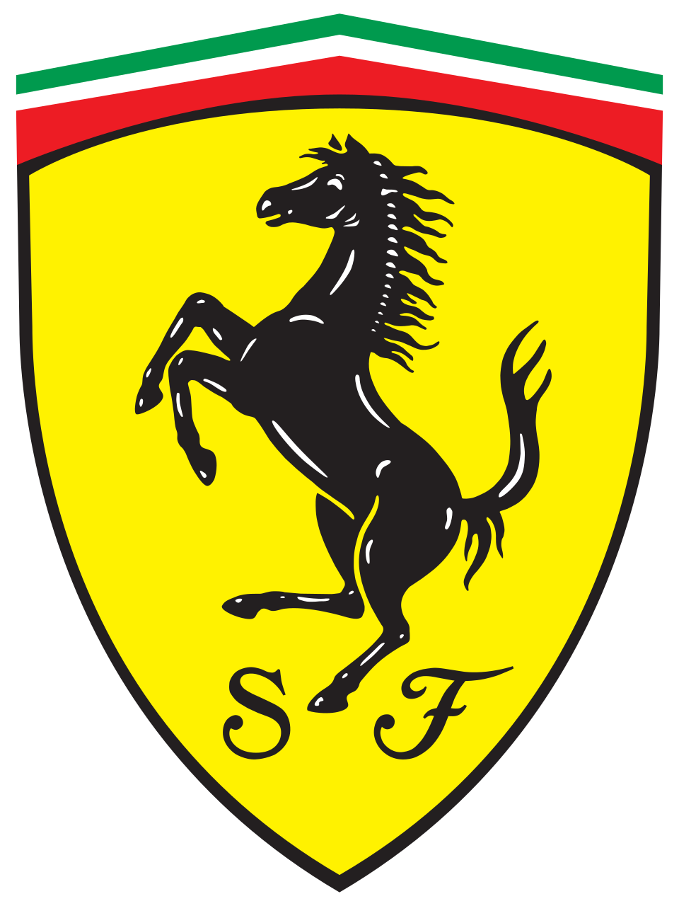
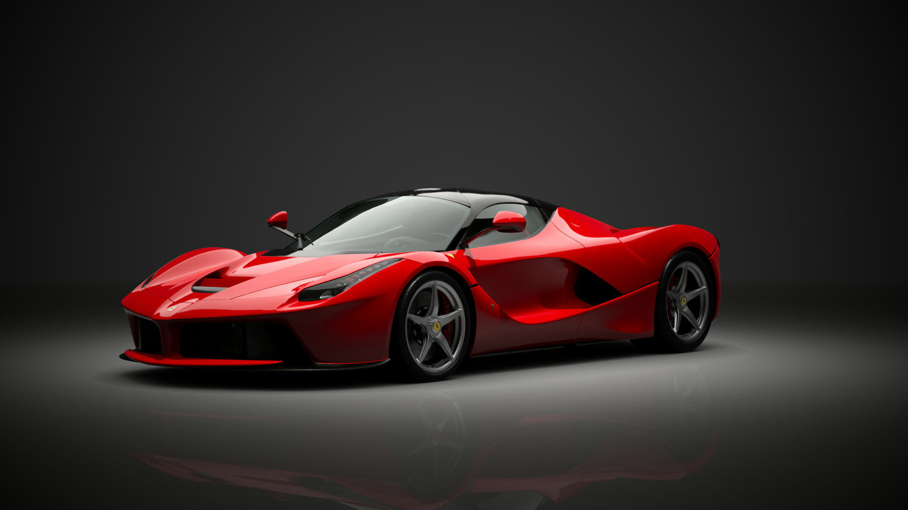
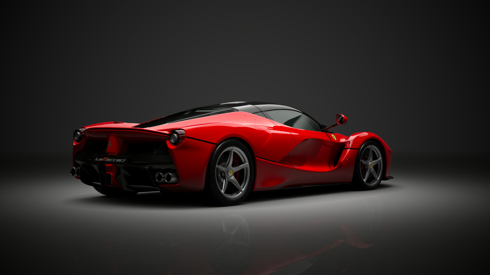
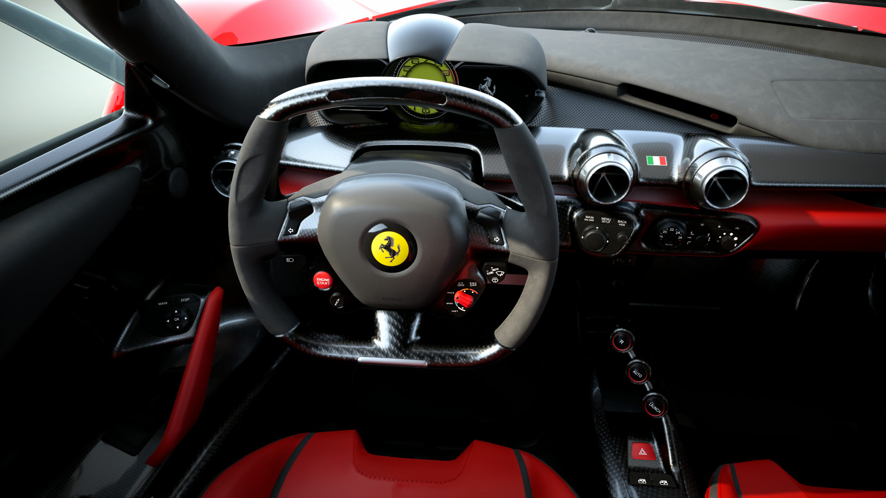

Der LaFerrari ist nicht einfach nur ein Auto — er ist ein Statement. Jede Linie, jede Kurve folgt der Ferrari-Philosophie: Form follows function, aber niemals ohne Emotion. Die aggressive Front mit den aerodynamischen Elementen erinnert an Ferraris Formel-1-Boliden, während die fliessenden Linien pure italienische Eleganz verkörpern.
Das Design stammt vom Centro Stile Ferrari unter der Leitung von Flavio Manzoni. Ziel war es, ein Auto zu schaffen, das sofort als Ferrari erkennbar ist, aber gleichzeitig neue Massstäbe setzt. Der LaFerrari verzichtet auf überflüssige Spielereien — jedes Element hat einen Zweck.

Unter der Haube arbeitet ein 6,3-Liter-V12-Saugmotor, der alleine schon 800 PS leistet. Dazu kommt ein Elektromotor mit 163 PS — zusammen ergibt das eine Systemleistung von 963 PS. Das HY-KERS-System (Hybrid Kinetic Energy Recovery System) wurde direkt aus der Formel 1 übernommen und für die Strasse adaptiert.
Anders als bei klassischen Hybriden kann der LaFerrari nicht rein elektrisch fahren. Der E-Motor dient ausschliesslich dazu, den Verbrenner zu unterstützen — für maximale Performance. Die Energie wird beim Bremsen zurückgewonnen und in einer Lithium-Ionen-Batterie gespeichert. Das System entscheidet intelligent, wann der Elektromotor zugeschaltet wird — der Fahrer muss sich um nichts kümmern.

Der LaFerrari nutzt aktive Aerodynamik: Klappen und Diffusoren passen sich automatisch an Geschwindigkeit und Fahrsituation an. Der Unterboden erzeugt massiven Abtrieb, ohne einen riesigen Heckflügel zu benötigen — typisch Ferrari, bei dem Ästhetik und Funktion im Einklang stehen müssen.
Im Cockpit sitzt der Fahrer tief und zentriert — wie in einem Formel-1-Auto. Alle Bedienelemente sind auf das Lenkrad ausgelagert, der Blick geht durch das kleine, flache Lenkrad direkt auf die Instrumententafel. Ferrari nennt es «Maximum Integration» — der Fahrer wird eins mit der Maschine. Kein Komfort-Schnickschnack, nur das Wesentliche: Gas, Bremse, Lenkung.

Erlebe den unverwechselbaren Klang des 6,3-Liter-V12 — ein Motorsound, der durch Mark und Bein geht.